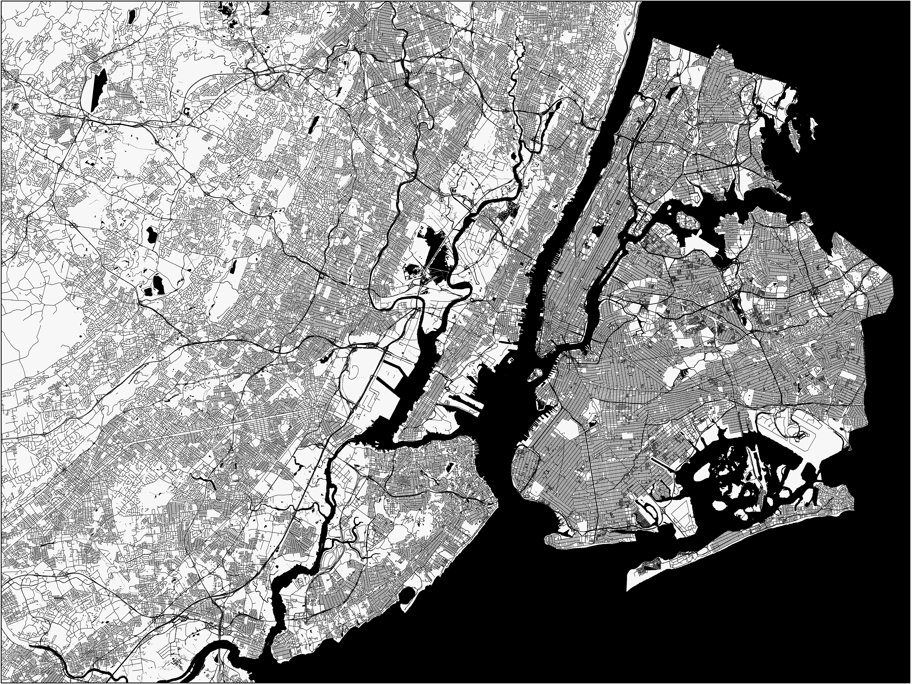

Independent Paid Projects
Includes projects I undertook for various clients on the website "Fiverr"
New York City/New Jersey Stylized Map
For one client, I created a stylized map of New Jersey and New York City. It was meant to resemble This map as closely as possible, and to fit within certain dimensions. I think it turned out quite nicely. Click the map to see the full size version.
African Language Areas Map
This is a map I made for someone studying languages in Africa. The idea was to show the location of the two language areas of interest (Xhosa and Nyakyusa) along with the study sites Mbeya and Makhanda and major cities and lakes for reference. The resulting map was simple, but functional. I drew the language area polygons based off of another map, which was something of a change of pace for me--most of my projects don't involve much vector editing.
Raster Sampling Script
One of my independent paid projects involved making a script which output a table in which each row would represent a single raster cell, and the columns would contain the value of that cell and its latitude and longitude. This required converting the raster layer to points and adding x and y data to the attribute table. Furthermore, the tool also includes the option to change noData values to a user-specified value. This tool was saved as a Python toolbox (.pyt file)
Export to Feature Dataset Script
This independent paid project involved making a script that exported shapefiles to a feature dataset, created a new field, and then populated that field with an expression that concatenated two other fields. Finally, it renames the feature class so as to have a distinct name from the shapefile. As per the client's request, this particular script contains a lot of comments, so it should be very easy to understand what it is doing. Like the previous script, this script is also a Python toolbox.
2D:3D Area Ratio Script
The area of a sloping pixel is not the same size as one that lies flat--a sloped pixel occupies more area than a flat one. For this project, I wrote a script which computes the ratio of 2D area (in other words, area not accounting for slope) to 3D area (area when slope is accounted for) for a given Digital Elevation Model (DEM). Rather than calculate the ratio for every cell in the DEM, the client (presumably to save time) specified that the script should instead take the mean, minimum, and maximum slope of every 5x5 cell section of the raster, calculate 2D:3D area ratios based off of those values, and put them into seperate lists--in other words, one list for minimum slope area ratios, one for mean slope area ratios, and one for maximum slope area ratios. Writing this tool involved converting the DEM to a slope raster and then converting that to a numpy array. This allowed for very flexible and fast calculations. One of the challenges with this script was dealing with the noData values that occured on the margins of the raster. In the end I found a way to ignore these. This particular script does not output anything, because the client had plans to modify it further afterward to create his own output.